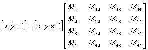
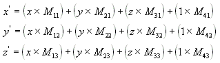
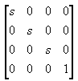
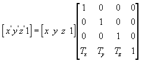
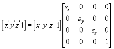
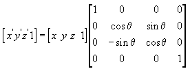
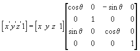
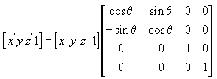
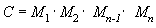
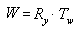

The part of Direct3D that pushes geometry through the fixed function geometry pipeline is the transform engine. It locates the model and viewer in the world, projects vertices for display on the screen, and clips vertices to the viewport. The transform engine also performs lighting computations to determine diffuse and specular components at each vertex.
The geometry pipeline takes vertices as input. The transform engine applies the world, view, and projection transforms to the vertices, clips the result, and passes everything to the rasterizer.
At the head of the pipeline, a model's vertices are declared relative to a local coordinate system. This is a local origin and an orientation. This orientation of coordinates is often referred to as model space, and individual coordinates are called model coordinates.
The first stage of the geometry pipeline transforms a model's vertices from their local coordinate system to a coordinate system that is used by all the objects in a scene. The process of reorienting the vertices is called the world transform. This new orientation is commonly referred to as world space, and each vertex in world space is declared using world coordinates.
In the next stage, the vertices that describe your 3D world are oriented with respect to a camera. That is, your application chooses a point-of-view for the scene, and world space coordinates are relocated and rotated around the camera's view, turning world space into camera space. This is the view transform.
The next stage is the projection transform. In this part of the pipeline, objects are usually scaled with relation to their distance from the viewer in order to give the illusion of depth to a scene; close objects are made to appear larger than distant objects, and so on. For simplicity, this documentation refers to the space in which vertices exist after the projection transform as projection space. Some graphics books might refer to projection space as post-perspective homogeneous space. Not all projection transforms scale the size of objects in a scene. A projection such as this is sometimes called an affine or orthogonal projection.
In the final part of the pipeline, any vertices that will not be visible on the screen are removed, so that the rasterizer doesn't take the time to calculate the colors and shading for something that will never be seen. This process is called clipping. After clipping, the remaining vertices are scaled according to the viewport parameters and converted into screen coordinates. The resulting vertices, seen on the screen when the scene is rasterized, exist in screen space.
Transforms are used to convert object geometry from one coordinate space to another. Direct3D uses matrices to perform 3D transforms. This section explains how matrices create 3D transforms, describes some common uses for transforms, and details how you can combine matrices to produce a single matrix that encompasses multiple transforms.
In applications that work with 3D graphics, you can use geometrical transforms to do the following:
You can transform any point (x,y,z) into another point (x', y', z') by using a 4x4 matrix, as shown in the following equation.

Perform the following equations on (x, y, z) and the matrix to produce the point (x', y', z').

The most common transforms are translation, rotation, and scaling. You can combine the matrices that produce these effects into a single matrix to calculate several transforms at once. For example, you can build a single matrix to translate and rotate a series of points.
Matrices are written in row-column order. A matrix that evenly scales vertices along each axis, known as uniform scaling, is represented by the following matrix using mathematical notation.

In C++, Direct3D declares matrices as a two-dimensional array, using the D3DMATRIX structure. The following example shows how to initialize a D3DMATRIX structure to act as a uniform scaling matrix.
// In this example, s is a variable of type float.
D3DMATRIX scale = {
s, 0.0f, 0.0f, 0.0f,
0.0f, s, 0.0f, 0.0f,
0.0f, 0.0f, s, 0.0f,
0.0f, 0.0f, 0.0f, 1.0f
};
The following equation translates the point (x, y, z) to a new point (x', y', z').

You can manually create a translation matrix in C++. The following example shows the source code for a function that creates a matrix to translate vertices.
D3DXMATRIX Translate(const float dx, const float dy, const float dz) {
D3DXMATRIX ret;
D3DXMatrixIdentity(&ret);
ret(3, 0) = dx;
ret(3, 1) = dy;
ret(3, 2) = dz;
return ret;
} // End of Translate
For convenience, the D3DX utility library supplies the D3DXMatrixTranslation function.
The following equation scales the point (x, y, z) by arbitrary values in the x-, y-, and z-directions to a new point (x', y', z').

The transforms described here are for left-handed coordinate systems, and so may be different from transform matrices that you have seen elsewhere.
The following equation rotates the point (x, y, z) around the x-axis, producing a new point (x', y', z').

The following equation rotates the point around the y-axis.

The following equation rotates the point around the z-axis.

In these example matrices, the Greek letter theta stands for the angle of rotation, in radians. Angles are measured clockwise when looking along the rotation axis toward the origin.
In a C++ application, use the D3DXMatrixRotationX, D3DXMatrixRotationY, and D3DXMatrixRotationZ functions supplied by the D3DX utility library to create rotation matrices. The following is the code for the D3DXMatrixRotationX function.
D3DXMATRIX* WINAPI D3DXMatrixRotationX
( D3DXMATRIX *pOut, float angle )
{
#if DBG
if(!pOut)
return NULL;
#endif
float sin, cos;
sincosf(angle, &sin, &cos); // Determine sin and cos of angle
pOut->_11 = 1.0f; pOut->_12 = 0.0f; pOut->_13 = 0.0f; pOut->_14 = 0.0f;
pOut->_21 = 0.0f; pOut->_22 = cos; pOut->_23 = sin; pOut->_24 = 0.0f;
pOut->_31 = 0.0f; pOut->_32 = -sin; pOut->_33 = cos; pOut->_34 = 0.0f;
pOut->_41 = 0.0f; pOut->_42 = 0.0f; pOut->_43 = 0.0f; pOut->_44 = 1.0f;
return pOut;
}
One advantage of using matrices is that you can combine the effects of two or more matrices by multiplying them. This means that, to rotate a model and then translate it to some location, you don't need to apply two matrices. Instead, you multiply the rotation and translation matrices to produce a composite matrix that contains all their effects. This process, called matrix concatenation, can be written with the following equation.

In this equation, C is the composite matrix being created, and Mâ‚ through Mâ‚™ are the individual matrices. In most cases, only two or three matrices are concatenated, but there is no limit.
Use the D3DXMatrixMultiply function to perform matrix multiplication.
The order in which the matrix multiplication is performed is crucial. The preceding formula reflects the left-to-right rule of matrix concatenation. That is, the visible effects of the matrices that you use to create a composite matrix occur in left-to-right order. A typical world matrix is shown in the following example. Imagine that you are creating the world matrix for a stereotypical flying saucer. You would probably want to spin the flying saucer around its center - the y-axis of model space - and translate it to some other location in your scene. To accomplish this effect, you first create a rotation matrix, and then multiply it by a translation matrix, as shown in the following equation.

In this formula, Ry is a matrix for rotation about the y-axis, and Tw is a translation to some position in world coordinates.
The order in which you multiply the matrices is important because, unlike multiplying two scalar values, matrix multiplication is not commutative. Multiplying the matrices in the opposite order has the visual effect of translating the flying saucer to its world space position, and then rotating it around the world origin.
No matter what type of matrix you are creating, remember the left-to-right rule to ensure that you achieve the expected effects.
Â
Â